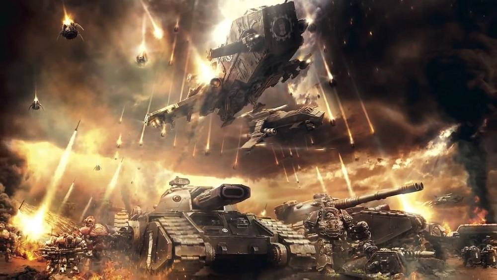
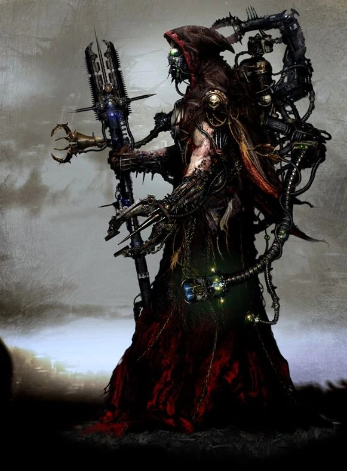

Moirae Schism
| Moirae Schism | |
|---|---|
| Part of the Nova Terra Interregnum | |
 Iron Hands armour and drop pods in a planetary assault; many Iron Hands clans held to the Moirate creed, and the schism divided the Chapter Artwork © Games Workshop | |
| Date | M35; the last Moirate holdouts were not purged until M37[a] |
| Location | The forge world of Moirae; forges, Titan Legions and Chapters across the Imperium; the Gulf of Black Shadows; Kamjada; Ghosaris |
| Result | Orthodox victory. Moirae destroyed; the Moirate doctrine declared heresy and eventually purged; a third of the Iron Hands exiled, later ratified as the Sons of Medusa |
| Belligerents | |
| Martian orthodoxy | Moirate heretics |
| Commanders and leaders | |
| Strength | |
| Casualties and losses | |
| Tens of millions of civilians killed[h][q] | |
The Moirae Schism was a religious schism and civil war within the Adeptus Mechanicus in the 35th millennium. It began on the minor forge world of Moirae, whose priesthood claimed to read the future of humanity in the fluctuations of the Astronomican, and spread through the forges, the Titan Legions and the Space Marine Chapters bound to the Mechanicus. It was the most divisive doctrinal conflict to strike the Cult Mechanicus since the Horus Heresy.[1]
The orthodox priesthood of Mars declared the Moirate teachings heresy and destroyed Moirae with a rectification fleet, but the doctrine had already spread. The war that followed was fought in forge worlds, in Titan Legions and in the void, and its greatest battle, a war of salvage in the Gulf of Black Shadows, lasted for centuries. The schism also divided the Iron Hands. A third of the Chapter embraced the Moirate creed and was exiled; its descendants were later recognised as a Chapter in their own right, the Sons of Medusa.[2]
The schism coincided with the Nova Terra Interregnum, when the Imperium was divided between two courts, and Imperial historians count it among the troubles of that age. Martian records say that more than two thousand years passed before the Moirate doctrine was considered purged.[1]
Background
[edit]In the early 35th millennium the Ur-Council of Nova Terra repudiated the authority of the High Lords of Terra and claimed the Segmentum Pacificus. The division of the Imperium ran through the Adepta as well as between worlds, and the Adeptus Mechanicus, which had never been wholly united in doctrine, was weakened by the rivalries of its forges. Several schisms arose in this period. The Moirae Schism was the most bitter of them.[3]
Moirae was a minor forge world of no great industrial weight. It was, however, the source of the STC data from which most of the Imperium's Whirlwind Hyperios air-defence vehicles were then built, and its archives were consulted by many other forges.[4]
The Moirate doctrine
[edit]
The creed of Moirae was based on the work of a triad of tech-mystics enshrined within the forge's great data-looms. The triad claimed to have found predictive patterns in the minute fluctuations of the beam of the Astronomican. They called these the Gematric patterns, and taught that they held the words of the Omnissiah, from which the future of the human race could be read.[1]
The triad recorded the results of their calculations in encrypted archives, and copies spread quickly through the sects of the Cult Mechanicus. Their contents went beyond prophecy. The archives contained veiled references to the future overthrow of Mars, and described a coming age in which the Cult Mechanicus and the Ecclesiarchy would be merged into a single state religion of the Imperium. To the Martian priesthood this was sedition. To the Ecclesiarchy, which had no wish to share its God-Emperor with the Machine God, it was blasphemy.[1]
Course of the schism
[edit]The destruction of Moirae
[edit]Civil war broke out between the orthodox priesthood and the radicals. The Fabricator-General sent a rectification fleet, and one of the first acts of the war was the destruction of Moirae, which was reduced to a cinder. Imperial records describe the destruction as an Exterminatus. The world is still a dead world.[1]
The destruction of the source came too late. The doctrine had taken hold in sects of the priesthood, in Skitarii regiments and in Titan Legions, and it spread from them to the Chapters of the Adeptus Astartes that had close ties to the Mechanicus. Conflict between the Moirate adepts, the Martian orthodoxy and other radical sects flared up across the Imperium for the following centuries.[1]
The Hyperios cipher
[edit]The Moirate tech-priests had built a hidden digital cipher into the Whirlwind Hyperios vehicles constructed from their STC data. On receiving the right code the machines powered down. The schismatics used the cipher against Imperial forces, and many Space Marine Chapters still refuse to deploy the Hyperios, though its pattern is known to most forge worlds and Astartes forges.[4]
The Gulf of Black Shadows
[edit]The largest and longest battle of the schism was fought in the nebula fields of the Gulf of Black Shadows. Mining wars between rival forge worlds there grew into great fleet actions. The wrecks of more than ten thousand ships, from mining craft to warships, came to drift among the gas clouds. The fighting did not end when the fleets were spent. Salvage crews fought on among the wrecks for centuries in boarding actions, each side trying to recover valuable technology, and whole maniples of battle robots were captured, reprogrammed and turned against their former masters.[1]

Ghosaris
[edit]On the world of Ghosaris the Adeptus Custodes intervened against an army of the Dark Mechanicum and destroyed it, the venerable Contemptor Dreadnought Uriaxes fighting at their head. Whether the Dark Mechanicum host had any connection with the Moirate schismatics is not known. The Custodes' record of the battle names it as part of the schism without explaining why.[5]
The Xarisians
[edit]Towards the end of the schism a radical sub-sect of the Moirate creed, the Xarisians, turned to outright techno-heresy in an attempt to win the war. They were hunted as hereteks even by their own creed, slaughtered and their creations destroyed. One survived: the great laser destructor called the Diamonas, which is said to have passed out of Imperial hands and to be fought over among the fallen houses of the Chaos Knights.[6]
The Iron Hands
[edit]
No Chapter was more deeply affected than the Iron Hands. The Moirate doctrine was embraced by a large part of the Chapter's brethren and championed among its clan companies by the Omnissian mystic Iron Father Setol Sollex. The Chapter came close to civil war.[2]
Clan Raukaan held to the Chapter's established beliefs. Under Iron Chaplain Furnous and Iron Captain Hekkan it was one of the few clan companies in which not a single battle-brother was corrupted by the new doctrine. At the Battle of Kamjada its Vindicators and Predators fought rebellious Mechanicus forces in Cataphractii armour, and the presence among the rebels of a small cadre of warriors from Clan Borrgos remained a cause of bitterness between the two clans for centuries.[2]
Open war within the Chapter was averted by the Great Clan Council, which imposed a settlement. The minority who had accepted the Moirate creed were exiled, and both sides swore a binding oath never to raise their hands against each other. About a third of the Chapter left, joined in time by a few brethren of Iron Hands Successor Chapters who shared their beliefs. Not every Successor was so lenient; the Red Talons are recorded as having destroyed their own dissidents rather than let them live.[2]
The exiles thought of themselves as Iron Hands still. They kept the Chapter's heraldry with small changes, organised themselves into three new clan companies, continued to fight the Imperium's enemies from their fleet and tithed their gene-seed to the Imperial authorities as before. They outlived the schism that had made them.[2]
Aftermath
[edit]The schism was ended by the slow attrition of the Moirate forges and sects and by the reabsorption of those adepts who recanted. Martian records say that it took more than two thousand standard years before the doctrine was considered fully purged.[1]
The exiled Iron Hands were judged at the beginning of the Age of Redemption, when the High Lords reassembled the Imperium after the Age of Apostasy. Their records and gene-seed were examined in detail and found loyal and untainted, and by an almost unique edict they were ratified as a Chapter of the Adeptus Astartes under the name Sons of Medusa. Parts of the Adeptus Mechanicus protested, and several Chapters had grave misgivings. The Iron Hands treat the Sons of Medusa with cold civility at best. In the late 39th millennium the Sons of Medusa built a chain of fortified void stations in the abandoned mining system of Taelus, one day's travel through the Warp from the dead world of Moirae.[7]
Legacy
[edit]The Moirae Schism left the Adeptus Mechanicus more suspicious of prophecy and of any attempt to read meaning in the working of the Astronomican, and more hostile to any suggestion that the Cult Mechanicus and the Imperial Cult might be reconciled. It is one of several schisms, with the Schism of Mars in the Horus Heresy, that Martian doctrine cites as proof of the danger of heterodox belief. The distrust of the Whirlwind Hyperios among the Chapters, the enmity between the Iron Hands and the Sons of Medusa, and the hulks of the Gulf of Black Shadows remain as its visible traces.[1]
Timeline
[edit]| Date | Event | Theatre |
|---|---|---|
| M35[r] | The Ur-Council of Nova Terra repudiates the High Lords of Terra and claims the Segmentum Pacificus | Nova Terra |
| M35[s] | The triad of tech-mystics at Moirae circulates the Gematric patterns, and the schism begins in the forges | Moirae |
| M35[t] | The Fabricator-General's rectification fleet destroys Moirae by Exterminatus | Moirae |
| M35[u] | Moirate adepts use the Hyperios cipher to switch off Imperial Whirlwind Hyperios vehicles | Segmentum Pacificus |
| M35[v] | Iron Father Setol Sollex champions the Moirate creed among the clan companies of the Iron Hands, and the Chapter comes close to civil war | Iron Hands |
| M35[w] | At the Battle of Kamjada, Clan Raukaan's Vindicators and Predators fight rebellious Mechanicus forces | Kamjada |
| M35[x] | The Adeptus Custodes destroy a Dark Mechanicum army on Ghosaris with the Contemptor Uriaxes | Ghosaris |
| Late M35[y] | The Xarisians turn to techno-heresy and are destroyed, though the Diamonas survives | Segmentum Pacificus |
| M35–M36[z] | Salvage crews fight among the wrecks of more than ten thousand ships for centuries after the main fleets are spent | Gulf of Black Shadows |
| M35[{] | The Great Clan Council exiles about a third of the Iron Hands and they are later ratified as the Sons of Medusa | Iron Hands |
| Early M37[|] | The High Lords ratify the exiled Iron Hands as the Chapter of the Sons of Medusa at the beginning of the Age of Redemption | Imperium of Mankind |
| Late M39 | The Sons of Medusa build a chain of void stations in the Taelus system, a day's Warp travel from the dead world of Moirae | Taelus |
See also
[edit]Notes
[edit]- ^ The Martian canticles state that the doctrine took more than two thousand years to purge. The Administratum's summary speaks of intermittent fighting "through the following millennium". The difference may lie in what each counts as the end of the schism.
- ^ The orthodox priesthood.
- ^ The loyal clans.
- ^ And other Successor Chapters.
- ^ The Moirate clans, later the Sons of Medusa.
- ^ A radical sub-sect.
- ^ The connection is uncertain.
- ^ a b c d e Estimated; Imperial records give no figure.
- ^ The rectification fleet from Mars, with battle congregations and orthodox Titan Legions.
- ^ The loyal two-thirds of the Iron Hands, with the Successor Chapters.
- ^ The forges, Skitarii and Titan Legions of the Moirate worlds.
- ^ About a third of the Iron Hands, among them warriors of Clan Borrgos.
- ^ Dozens of Space Marine companies were destroyed.
- ^ Salvage wars followed among the wrecks in the Gulf of Black Shadows.
- ^ Purged over more than two thousand years.
- ^ Hereteks were hunted down and their creations destroyed.
- ^ Moirae was reduced to a cinder, a dead world to this day.
- ^ Estimated; the sources date the schism only to the 35th millennium.
- ^ Estimated; the sources date the schism only to the 35th millennium.
- ^ Estimated; the sources date the schism only to the 35th millennium.
- ^ Estimated; the sources date the schism only to the 35th millennium.
- ^ Estimated; the sources date the schism only to the 35th millennium.
- ^ Estimated; the sources date the schism only to the 35th millennium.
- ^ Estimated; the sources date the schism only to the 35th millennium.
- ^ Estimated; the sources date the schism only to the 35th millennium.
- ^ Estimated; the sources date the salvage war only to the schism, which lasted for centuries.
- ^ Estimated; the sources date the schism only to the 35th millennium.
- ^ Estimated from the start of the Age of Redemption, when the exiles were judged.
References
[edit]- ^ a b c d e f g h i Codex: Adeptus Mechanicus (8th Edition), "The Quest for Knowledge," pg. 34. Games Workshop.
- ^ a b c d e Codex: Adeptus Custodes (8th Edition), pg. 66. Games Workshop.
- ^ Codex: Chaos Knights (8th Edition), pg. 68. Games Workshop.
- ^ a b Codex: Space Marines (8th Edition) (Revised Codex), pg. 56. Games Workshop.
- ^ Codex Adeptus Mechanicus - Skitarii (7th Edition), pg. 21. Games Workshop.
- ^ Clan Raukaan - A Codex: Space Marines Supplement (6th Edition), pp. 19, 74. Games Workshop.
- ^ Warhammer 40,000: Rulebook (7th Edition), "The Ages of Mankind". Games Workshop.